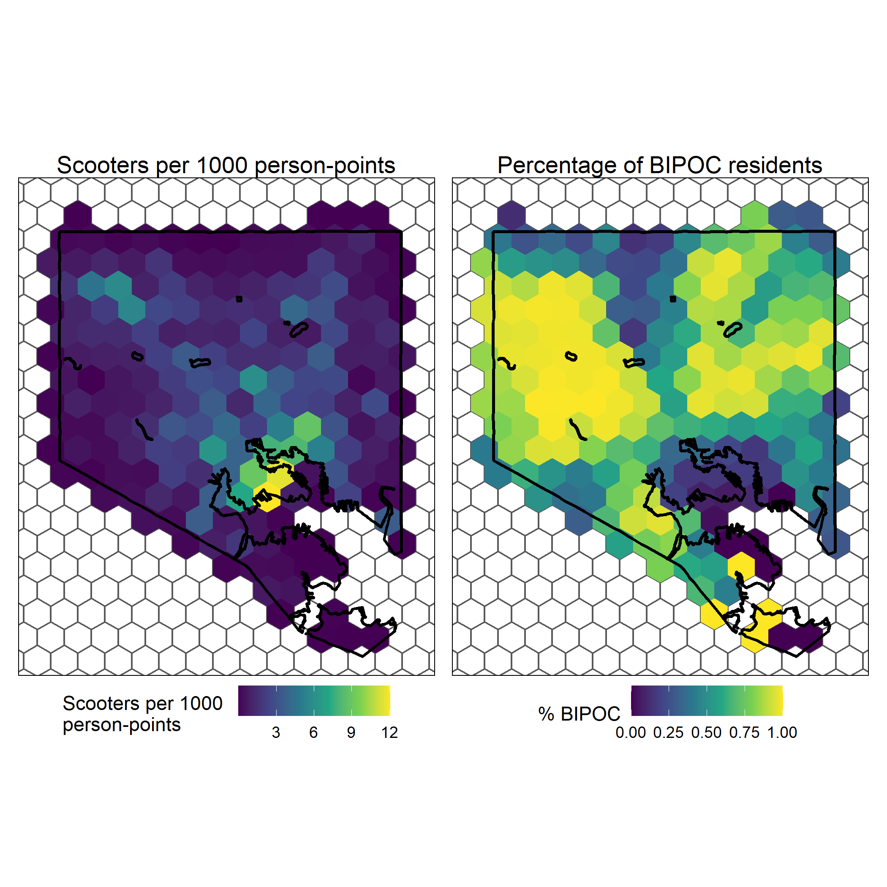
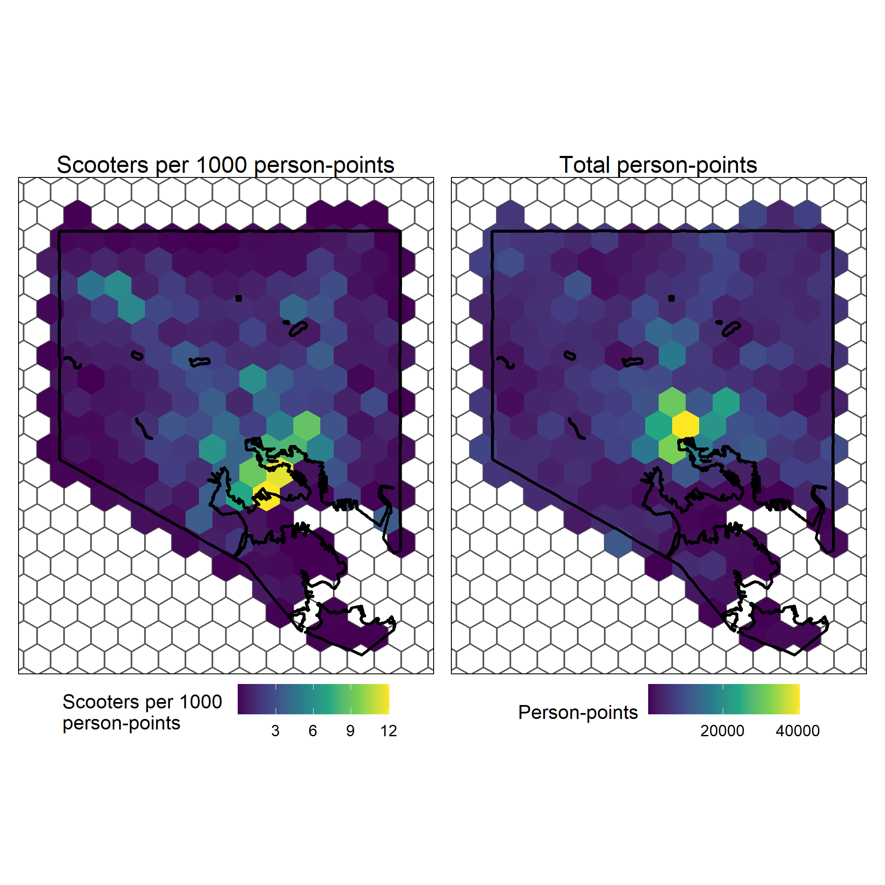

Equitable Access to Dockless Vehicles in Baltimore City
Introduction
In 2019, Baltimore City officially adopted its Dockless Vehicle Program, granting permits to micromobility companies Link, Lime, and Spin. The goal of this program was to supplement existing public transit networks, to provide a sustainable alternative for small-scale commuting, and, according to the Baltimore DOT, to be ridden just “for fun!”
As the ‘dockless’ name implies, these scooters have nowhere to call home: they’re placed down by local employees of the scooter vendor, remain out for up to weeks at a time, then recollected for maintenance and recharging before being placed out again. Baltimore City lays out clear Deployment Zones and Deployment Equity Zones, in which a certain amount of scooters must remain for the vendors to continue operation in the city.
These zones are relatively small compared to the size of the city boundary: do they make scooter distribution truly equitable? Using the vendors’ public API endpoints (another requirement for operation within the city), data was (and is being) collected on scooter locations every fifteen minutes. For this project, I only analyzed times between 6:00 am and 10:00 am for the week of May 1, 2022 and May 7, 2022; but the potential is there for much more detailed analysis.
The python script which queries the API endpoints for all three vendors is currently running on Mapping Capital, and all other analysis was done using R statistical software. The scripts I used to manipulate the data collected can be found here.
Results
For this analysis, I’ve coined a new unit: people-points. Represented by the total number of jobs as represented in LEHD data added with the total population in a given area, people-points can be used to find centers of transport and human activity as people commute to and from work and home. I’ll be symbolizing my maps based on the number of scooters per person-point (in this case, per 1,000 people-points for better scaling) in order to pick out locations where the number of scooters is not proportional to the number of jobs and residents in an area.
Here are the resulting maps, made in ggplot2 and arranged using patchwork:
 
We can see that, during a week of morning commuting (Monday - Monday), the areas with the most scooter trips per person-point are in Locust Point and the Inner Harbor. More specifically, the two yellowest polygons, which represent the hexes with the highest proportion of trips per person-point, contain the Under Armour main campus. Notably, areas with high percentages of BIPOC individuals are almost all dark purple, showing few numbers of scooter trips per person-point.
According to Spin, they are “committed to being the best possible partner for cities while building the safest, most equitable, and most sustainable mobility solution for the communities [they] serve” (emphasis added). I’d say that, whether intentional or not, the stark contrast of micromobility in marginalized communities compared to whiter communities demonstrates a veritable lack of equitable access, at least in Baltimore. Whether the vehicles are purposely dropped in whiter areas after charging, if they’re used to commute from these areas to Downtown but not back, or any other reason, calling the distribution of scooter trips and availability “equitable” is downright laughable as things stand at the moment.
Further research:
An important reason that cities (including Baltimore) adopt these platforms is to supplement existing transit networks by providing a method for an individual to quickly get to a transit stop before switching to the bus, train, or other method of transit. One interesting area of research in this regard could be to examine how many scooter trips have start and end points that mirror existing transit routes. Could people be using scooters instead of public transit? If so, why? And, as always, more research could be carried out with more data. Since the script collecting our data runs every 15 minutes until the server runs out of storage or the inevitable heat death of the universe (whichever comes first), we could theoretically run this same analysis for time periods of months or even years, given powerful enough hardware.